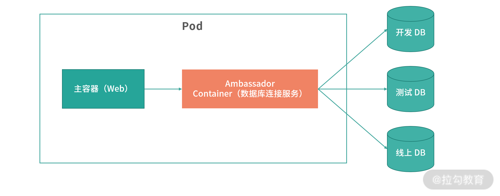

- 00 开篇词 为什么大厂面试必考操作系统？.md.html
- 00 课前必读 构建知识体系，可以这样做！.md.html
- 01 计算机是什么：“如何把程序写好”这个问题是可计算的吗？.md.html
- 02 程序的执行：相比 32 位，64 位的优势是什么？（上）.md.html
- 03 程序的执行：相比 32 位，64 位的优势是什么？（下）.md.html
- 04 构造复杂的程序：将一个递归函数转成非递归函数的通用方法.md.html
- 05 存储器分级：L1 Cache 比内存和 SSD 快多少倍？.md.html
- 05 (1) 加餐 练习题详解（一）.md.html
- 06 目录结构和文件管理指令：rm -rf 指令的作用是？.md.html
- 07 进程、重定向和管道指令：xargs 指令的作用是？.md.html
- 08 用户和权限管理指令： 请简述 Linux 权限划分的原则？.md.html
- 09 Linux 中的网络指令：如何查看一个域名有哪些 NS 记录？.md.html
- 10 软件的安装： 编译安装和包管理器安装有什么优势和劣势？.md.html
- 11 高级技巧之日志分析：利用 Linux 指令分析 Web 日志.md.html
- 12 高级技巧之集群部署：利用 Linux 指令同时在多台机器部署程序.md.html
- 12 (1)加餐 练习题详解（二）.md.html
- 13 操作系统内核：Linux 内核和 Windows 内核有什么区别？.md.html
- 14 用户态和内核态：用户态线程和内核态线程有什么区别？.md.html
- 15 中断和中断向量：Javajs 等语言为什么可以捕获到键盘输入？.md.html
- 16 WinMacUnixLinux 的区别和联系：为什么 Debian 漏洞排名第一还这么多人用？.md.html
- 16 (1)加餐 练习题详解（三）.md.html
- 17 进程和线程：进程的开销比线程大在了哪里？.md.html
- 18 锁、信号量和分布式锁：如何控制同一时间只有 2 个线程运行？.md.html
- 19 乐观锁、区块链：除了上锁还有哪些并发控制方法？.md.html
- 20 线程的调度：线程调度都有哪些方法？.md.html
- 21 哲学家就餐问题：什么情况下会触发饥饿和死锁？.md.html
- 22 进程间通信： 进程间通信都有哪些方法？.md.html
- 23 分析服务的特性：我的服务应该开多少个进程、多少个线程？.md.html
- 23 (1)加餐 练习题详解（四）.md.html
- 24 虚拟内存 ：一个程序最多能使用多少内存？.md.html
- 25 内存管理单元： 什么情况下使用大内存分页？.md.html
- 26 缓存置换算法： LRU 用什么数据结构实现更合理？.md.html
- 27 内存回收上篇：如何解决内存的循环引用问题？.md.html
- 28 内存回收下篇：三色标记-清除算法是怎么回事？.md.html
- 28 (1)加餐 练习题详解（五）.md.html
- 29 Linux 下的各个目录有什么作用？.md.html
- 30 文件系统的底层实现：FAT、NTFS 和 Ext3 有什么区别？.md.html
- 31 数据库文件系统实例：MySQL 中 B 树和 B+ 树有什么区别？.md.html
- 32 HDFS 介绍：分布式文件系统是怎么回事？.md.html
- 32 (1)加餐 练习题详解（六）.md.html
- 33 互联网协议群（TCPIP）：多路复用是怎么回事？.md.html
- 34 UDP 协议：UDP 和 TCP 相比快在哪里？.md.html
- 35 Linux 的 IO 模式：selectpollepoll 有什么区别？.md.html
- 36 公私钥体系和网络安全：什么是中间人攻击？.md.html
- 36 (1)加餐 练习题详解（七）.md.html
- 37 虚拟化技术介绍：VMware 和 Docker 的区别？.md.html
- 38 容器编排技术：如何利用 K8s 和 Docker Swarm 管理微服务？.md.html
- 39 Linux 架构优秀在哪里.md.html
- 40 商业操作系统：电商操作系统是不是一个噱头？.md.html
- 40 (1)加餐 练习题详解（八）.md.html
- 41 结束语 论程序员的发展——信仰、选择和博弈.md.html
- 捐赠
40 (1)加餐 练习题详解（八）
今天我会带你把《模块八：虚拟化和其他》中涉及的课后练习题，逐一讲解，并给出每一讲练习题的解题思路和答案。
练习题详解
37 | 虚拟化技术介绍：VMware 和 Docker 的区别？
【问题】自己尝试用 Docker 执行一个自己方向的 Web 程序：比如 Spring/Django/Express 等？
【解析】关于如何安装 Docker，你可以参考这篇文档。然后这里还有一个不错的 SpringBoot+MySQL+Redis 例子，你可以参考这篇内容。
其他方向可以参考上面例子中的 Compose.yml 去定义自己的环境。 一般开发环境喜欢把所有工具链用 Compose 放到一起，上线的环境数据库一般不会用 Docker 容器。 Docker-Compose 是一个专门用来定义多容器任务的工具，你可以在这里得到。
国内镜像可以用 Aliyun 的，具体你可以参考这篇文档。
（注：需要一个账号并且登录）
38 | 容器编排技术：如何利用 K8s 和 Docker Swarm 管理微服务？
【问题】为什么会有多个容器共用一个 Pod 的需求？
【解析】Pod 内部的容器共用一个网络空间，可以通过 localhost 进行通信。另外多个容器，还可以共享一个存储空间。
比如一个 Web 服务容器，可以将日志、监控数据不断写入共享的磁盘空间，然后由日志服务、监控服务处理将日志上传。
再比如说一些跨语言的场景，比如一个 Java 服务接收到了视频文件传给一 个 OpenCV 容器进行处理。
以上这种设计模式，我们称为边车模式（Sidecar），边车模式将数个容器放入一个分组内（例如 K8s 的 Pod），让它们可以分配到相同的节点上。这样它们彼此间可以共用磁盘、网络等。
在边车模式中，有一类容器，被称为Ambassador Container，翻译过来是使节容器。对于一个主容器（Main Container）上的服务，可以通过 Ambassador Container 来连接外部服务。如下图所示：

我们在开发的时候经常会配置不同的环境。如果每个 Web 应用都要实现一套环境探测程序，比如判断是开发、测试还是线上环境，从而连接不同的 MySQL、Redis 等服务，那么每个项目都需要引入一个公用的库，或者实现一套逻辑。这样我们可以使用一个边车容器，专门提供数据库连接的服务。让连接服务可以自动探测环境，并且从远程读取全局配置，这样每个项目的开发者不需要再关心数据库有多少套环境、如何配置了。
总结
“[39 | Linux 架构优秀在哪里?]”和 “40 | 商业操作系统：电商操作系统是不是一个噱头？”因为这两讲内容人文色彩较重，我没有给你设置课后习题。但是如果你对这两讲的内容感兴趣，可以在留言区和我交流。
到这里，《重学操作系统》专栏的全部知识都已经讲解结束了。在这 40 讲中，我试图用通俗易懂的语言帮助你建立整个《操作系统》的知识体系，并且最大程度地帮助你将这些基础知识发散到实战场景中去。
在我看来，基础知识是相通的，学习是为了思考和解决问题。《操作系统》和《计算机组成原理》可以作为入门编程领域的前两门课，后续我会继续努力写出更多帮助你提升基础技能、开阔视野、加深认知的专栏课程。
© 2019 - 2023 Liangliang Lee. Powered by gin and hexo-theme-book.